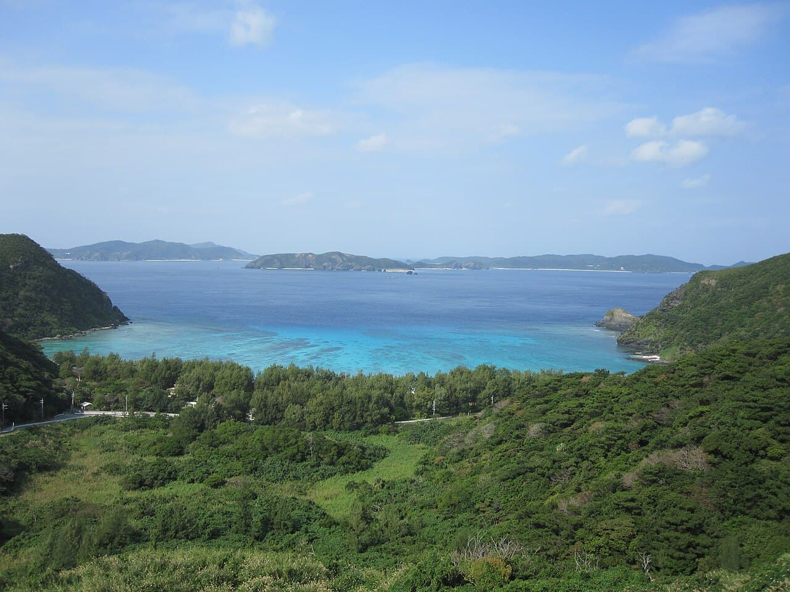

Îles Kerama
Okinawa, Japon · snorkeling, plongée, baignade, kayak

Un archipel de parc national à une heure de Naha, connu pour la transparence de son eau — le « bleu Kerama » — et pour ses tortues vertes qui broutent l'herbier.
- Lieu
- Okinawa, Japon
- Niveau
- Débutant
- Activités
- snorkeling, plongée, baignade, kayak
- Type d'eau
- Mer / océan
- Coordonnées
- 26.20, 127.35 (position approximative du secteur)
Dangers à connaître
- Ferries et bateaux de plongée dans les passes.
- Courant entre les îlots.
- Parc national : garde tes distances avec les tortues.
Le conseil d'Ocean Buddy
Palme au-dessus de l'herbier sans t'y poser : c'est le garde-manger des tortues.
Ouvrir dans Ocean Buddy Télécharger sur l'App Store
Source : Description historique Ocean Buddy · vérification externe en attente.